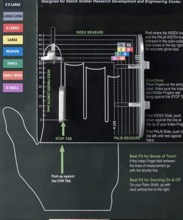

The new hand sizing tool comes in two formats, the
physical sizing device and the digital pdf version. Additonally sizing Hand Forms are used by
manufacturers.
Want to know how it works? Watch the video!
The PDF version so you can size your hands at home.
Benefits
The benefits to a well fit gloves are so good, you'll want
to keep the gloves on your hands, not in your pockets.
Optimum Tactility
The drawbacks of an ill fit glove make it hard to manipulate small objects
with your hands. With the new hand sizing tool, we can ensure optimal
fit, improving your sense of touch and making object manipulation that much easier.
Increased Strength
When your gloves don't fit right, you don't feel right. Sizing your hands
gives your gloves maximum grip strength and dexterity.
Reduced Fatigue
Gloves too small will tire hands during extended wear, so get some properly
fitted gloves to reduce glove-induced fatigue.
reviews
What do others have to say about it?
By the US Military
Want to read what the US Military thinkgs about the new hand sizing tool?
Masley Enterprises
Masley Gloves created the technology to improve glove fit
everywhere.
Masley Enterprises
The Hand Sizing Tool was developed by Frank Masley of Masley Enterprises
Inc. and Stacey Lee, glove Project Engineer with the U.S. Army. The Hand Sizing Tool is
available for sale by MASLEY Enterprises Inc.
The paper tool version of the hand sizing tool allows you to determine your hand size
right at home. To do so, print out the pdf shown above, and watch our short tutorial
video on how to use it.
This is the glove forms used when manufactoring gloves that correspond to the hand sizing
tool. The brochure is the pdf above, for any questions regarding the tool please contact
us via any forms of communication outlined in the "Contact" portion of the site.
To order, fill out the form the "Order Now" button redirects you too. Then fax or email
that form to Masley Gloves, located in the Contact section.
WARRANTY
Masley Enterprises Inc. warrants the SIZING TOOL and HAND FORMS against defects in
materials and workmanship for a period of 90 days from date of delivery. In order for
this warranty to be effective, you must notify us within the warranty period and return
the item with claimed defect. We will, at our sole option and as your exclusive remedy,
repair or replace the defective product without charge, or refund the price you have
paid. You must return the defective product to us, properly packaged, and with insurance
and transportation costs prepaid. We will reship the product to you at our expense to
addresses within the continental United States and to APO & FPO addresses.
This warranty does not cover defects which we determine are because of accident,
alteration, modification, negligence, misuse, abuse, failure to perform adequate
maintenance, normal wear and tear and normal maintenance.
CARE
The HAND SIZING TOOL and HAND FORMS may be washed by wiping with a damp cloth. A mild
soap may be used. Do not use bleach or solvents.
Order
To order, print out the pdf linked below and either fax or email the filled out form to
either info@glovesize.com
The Hand Sizing Tool provides an easy and accurate way to measure one's hand.
The length of the index finger and the width of the palm are measured. These two
measurements are highly correlated to the 3 dimensional measurements of the hand.
A standardized glove sizing system, comprising eight (8) sizes, has been
developed to match the hand measurements. The standardized glove sizes will fit the
adult population of both women and men from the 5th percentile to the 95th
percentile.
The new standardized glove sizing system was developed by the US ARMY in 2010
and is based on the HANDLOGIC Glove Sizing System developed by MASLEY Enterprises in
2001.
Advantages of using the Hand Sizing Tool and
Glove Sizing System
1. The Hand Sizing Tool allows a person to choose a standard glove size that offers the
best fit.
2. The glove size corresponds to the measured hand dimensions of index finger length for
tactility and palm width for easy donning.
3. The glove sizing system is a single unisex sizing system that applies to both male
and female hands.
4. The U.S. Army defined a specific set of dimensions to correspond to the size
designations, X Small, Small Wide, Small, Medium, Large, X Large, Large Long and XX
Large. These dimensions match the Glove Sizing System and the Hand Sizing Tool.
5. The Glove Sizes for the Hand Sizing Tool corresponds to the HANDLOGIC® Glove Sizing
System as shown in the table below.
HAND SIZING TOOL - GLOVE SIZE
HANDLOGIC® GLOVE SIZE
XX LARGE
80W
LARGE-LONG
80N
X LARGE
75W
LARGE
75N
MEDIUM
70W
SMALL
70N
SMALL-WIDE
66W
X SMALL
66N
6. The Hand Sizing Tool and the standard Glove Sizes provide a great advantage to the
buyer. Historically, a commercial glove size "Large" had different dimensions from each
manufacturer. With the new tool and new standard sizes, the buyer will be able to
purchase commercial glove offerings from multiple manufacturers and be more assured of a
consistent fit.
7. The standard glove sizing system aids the retailer by minimizing the need for
customers to take gloves out of the packaging. This is because there is less need to try
on different sizes to select the best fitting glove.
8. The Hand Sizing Tool and the accompanying standard Glove Sizes have a great advantage
when used in sales of gloves via e-commerce, catalogues and other similar mediums in
which the consumer is not able to physically touch the glove product prior to
purchasing. Once the person measures their hand on the Hand Sizing Tool and the gloves
are made to the standard sizes, the choice of the proper size glove is more assured as
opposed to traditional glove sizing not based on a standard.
Us Military
Hear what they have to say.
New hand-sizing tool will standardize Army
gloves
NATICK, Mass. (Sept. 26, 2012) -- Stacey Lee, Project
Engineer for Army gloves at Natick Soldier Research, Development and Engineering Center,
teamed up with Masley Enterprises and created a Hand-Sizing Tool that has recently been
patented.
Currently, there is no standard hand-measuring methodology. Most companies
ask for the circumference of the palm and the length from the middle finger
to the wrist crease; consumers generally try gloves on to find the right
pair. Soldiers experience the latter when going through Rapid Fielding
Initiative and other processes; a lot of time is spent trying on gloves and
in the process, gloves are stretched out causing glove waste and incorrect
fittings for those Soldiers at the end of the fitting line.
"The new tool will standardize glove sizing," said Lee. "Until all glove
sizes are adopted to the tool size verbiage, we will at least be able to
make correlation between sizes and be able to more easily requisition the
correct gloves for Soldiers. Also, the new tool will be utilized for sizing
Soldiers' hands during the Rapid Fielding Initiative."
Masley Enterprises' hand-sizing tool was originally a piece of paper that
later became a piece of laminated paper mounted onto foam with a small block
positioned to keep the hand in the correct position. Masley used Army data
from the anthropometric study of 1989 as well as their own research to
create glove sizes they believed fit best for the 95th percentile of
Soldiers.

"When I was doing my research, I looked at the measurements the anthropometric team
would take," said Lee, "and in measuring they always required that the finger-portion of
the hand be raised eight to 10 millimeters. The reason to raise the fingers is because
of the natural curve of the hand. Elevating the fingers reduces the amount that the hand
is stretched when lying flat."
Lee also added something else to the newly patented design, a specified component on the
tool that is important for measuring Soldiers' index fingers.
"The stopper is to measure the length of your trigger finger," said Lee. "The war fighter
would normally be looking for sensitivity in the tip of their finger to feel their
trigger, so you would bring that down as far as you could to measure for a tight fit at
the finger tip."
The armed services vary in their methods of glove sizes ranging from sizes 4-11 while
other pairs are sized XXS-XXL. Gauging the correct size for one pair of gloves can be a
challenge, but figuring out the correct size in a completely different glove type and
sizing scale becomes a dilemma.
Consumers face similar problems with sizing on a regular basis, but on the battlefield,
ill-fitting clothing or gloves can come with dire consequences. When a Soldier needs a
new pair of gloves, unless they already have a size in the specific glove, it can be
challenging to order the right sized pair.
"We needed something that would measure the Soldier's hand and provide a size that is
easy to remember. Included in the sizing system are the sizes as follows: extra small,
small-wide, small, medium, large, extra large, large-long, extra extra large, large-long
(meaning a person's fingers are longer and his or her hand is a normal width); these
sizes achieve the best fit for the range within the 95th percentile."
There are eight sizes in total, but records show that five percent of Soldiers' hands are
smaller or larger than sizes at the end of the spectrum. The Soldiers that fall within
the five percent (outside of the mean 95 percent) have specific measurements for their
custom gloves. Although most gloves are not currently made to the hand-sizing tool exact
sizes, the gloves developed by Masley Enterprises, Inc. match the sizing of the tool.
Having the appropriate glove size is incredibly important, not just for comfort but for
efficiency in all environments.
"When you think about winter gloves, it is all about warmth and dexterity," said Lee. "If
your glove is too tight, you will not be warm because it will either cut off your
circulation or there will not be enough air space between your hand and the shell of the
glove to provide insulation. That is why I talk about requiring a glove to fit a certain
hand size and that is why the patent is labeled as a hand-sizing tool ... because we
want to make sure a glove fits a specific size hand."
Existing services' gloves can be fitted onto the hand forms Masley designed, so that Lee
is able to deduce the closest comparable size based on the measured hand and the glove
being ordered. Lee knows that it is not going to be an exact replica until patterns are
changed to the sizing scale, but she now has a charting system to compare sizes between
different types of gloves.
Lee is also acutely aware of the most important factors for obtaining the correct fitting
gloves.
"Dexterity and tactility are very important for proper functionality while wearing a
combat glove," Lee explained. "If you're working with a work glove, it's not going to
have the same tightness and dexterity as a combat glove. If you have a winter glove,
it's going to have loft to it."
Overall, the hand-sizing tool will make the process smoother for Soldiers getting issued
handwear. They can simply put their hand on the tool and do not have to try on multiple
pairs of gloves, which is time consuming and wasteful.